Bases de datos¶
Bases de datos¶
- ¿Sabes qué es una base de datos?
- ¿Para qué sirven?
Como amantes del cine, tenemos una gran colección de DVDs en casa. Hasta ahora llevábamos el control en una hoja de Calc, donde apuntábamos datos como título, director, género y otros detalles.
Últimamente hemos empezado a prestar nuestras películas a amigos y familiares, y eso nos preocupa porque podemos olvidar a quién se las dejamos o si nos las devolverán.
Para resolverlo, vamos a crear una base de datos que nos permita:
- Guardar la información de cada película (título, director, año, formato, etc.).
- Registrar a las personas a las que prestamos cada película (nombre, teléfono, fecha de préstamo).
- Consultar fácilmente quién tiene cada DVD y cuándo debe devolverse.
- Evitar pérdidas y facilitar el seguimiento de los préstamos.
El estudio de este tema no te va a convertir en exporto en bases de datos, pero sí que te va a dar la foto global de porqué son necesarias y también del proceso que se sigue para su construcción.
Una base de datos (BBDD) es un conjunto de datos relacionados entre sí gestionados por un programa denominado Sistema gestor de base de datos (SGBD) que proporciona las herramientas y el entorno para guardar y organizar información.
- Guardar grandes cantidades de datos.
- Buscar información fácilmente.
- Relacionar la información entre sí.
Tipos de Sistemas gestores de bases de datos (SGBD)¶
Hoy en día, la base de datos más conocida es la de Microsoft Office - Access.

También se utiliza mucho la base de datos de la suite LibreOffice - Base, que es totalmente compatible con la de Microsoft y además gratuita.

Google no tiene una aplicación de base de datos. En su lugar proponen una combinación de la hoja de cálculo vinculada a formularios digitales.
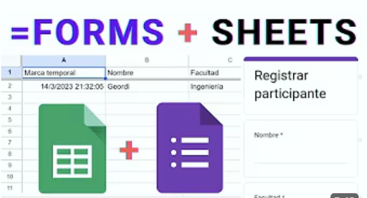
Elementos de una base de datos.¶
Independientmente del SGBD empleado, toda base de datos está compuesta por cuatro elementos principales:
-
Tablas: Permiten almacenar los datos relacionados de forma organizada en una estructura de tabla.
Cada tabla consta de:
- Filas (registros): cada elemento guardado (por ejemplo, un película).
- Columnas (campos): las partes de información que queremos guardar (por ejemplo, título, año, director...).
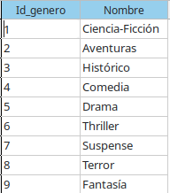
Tabla de peliculas Las tablas se relacionan entre sí a través de las Claves primarias 🔑
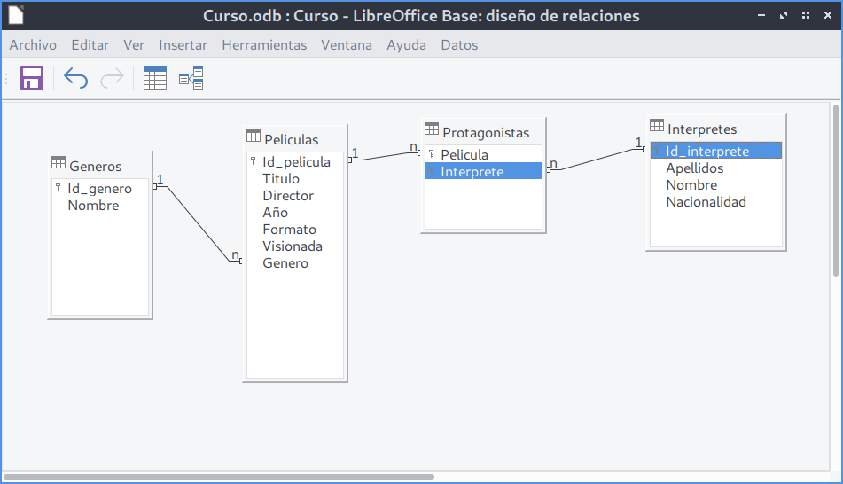
Relación de tablas -
Consultas: Permiten consultar los datos de forma fácil, filtrándolos y ordenándolos.
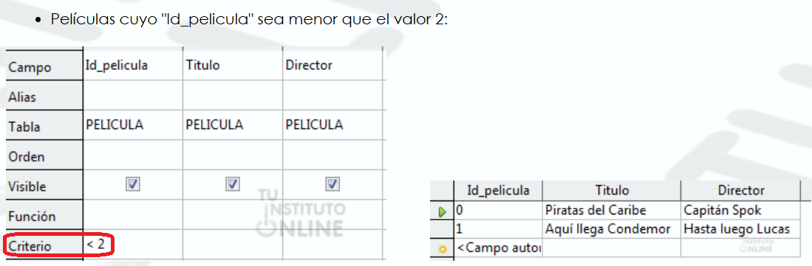
Consulta de películas cuyo id sea mayor a 2 -
Formularios: Permiten la entrada de datos de forma fácil y ordenada.
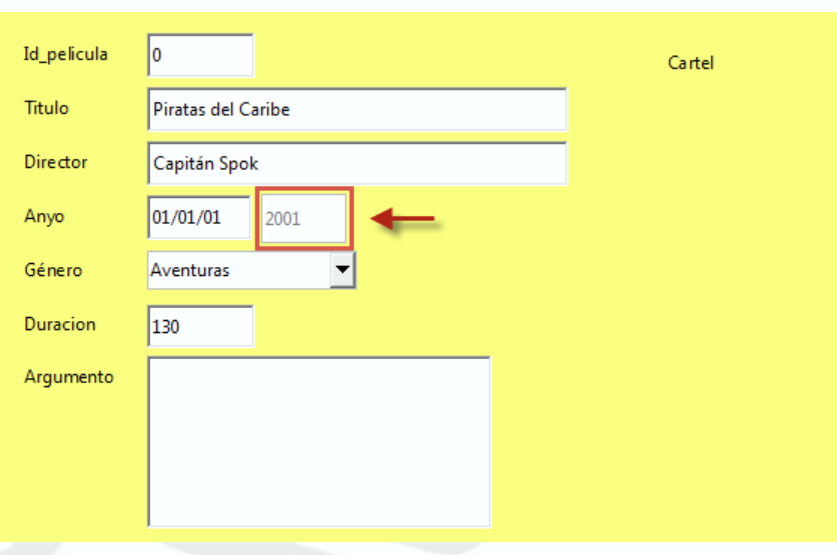
Ejemplo formulario películas -
Informes: Permiten obtener tablas de los datos impresos.
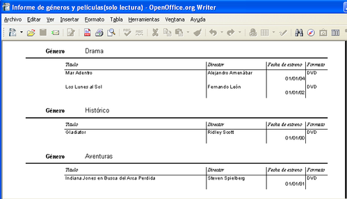
Ejemplo informe películas
Creación de una base de datos¶
Para crear una base de datos nos situamos en el entorno de LibreOffice Base. En la ventana inicial, seleccionamos “Crear una nueva base de datos” y hacemos clic en Siguiente.
A continuación, debemos elige “Registrar la base de datos” → Sí y pulsar Finalizar.
Por último, escribimos un nombre para el archivo (por ejemplo, peliculas.odb) y lo guardamos.

Creación de tablas¶
Nos situamos en el entorno de LibreOffice Base. En el panel izquierdo Base de datos hacemos clic en el icono Tablas y, dentro del panel Tareas, pulsamos sobre Crear tabla en modo de diseño….

A continuación por cada columna de nuestra futura tabla podemos indicar el nombre, el tipo de datos, una breve descripción sobre lo que almacenará dicha columna y restricciones a cumplir.
- Nombre: Identificador de la columna. Sirve para reconocer el dato que se va a almacenar y debe ser claro, descriptivo y único dentro de la tabla.
-
Tipo de dato: Indica el tipo de información que puede almacenarse en la columna, como números, texto, fechas o valores lógicos.
Los tipos de datos básicos y más usados en LibreOffice Base
Tipo de dato Nombre en LibreOffice Base Uso principal Ejemplo Texto Text (VARCHAR) Almacenar palabras o frases cortas. “Avatar”, “Ridley Scott” Texto largo Memo (LONGVARCHAR) Almacenar descripciones o textos largos. "Descripción del producto..." Número entero Integer Números sin decimales. 10, 2024 Número decimal Decimal Números con decimales (precios, cantidades). 19.95, 3.75 Fecha Date Almacenar fechas. 01/01/2024 Fecha y hora Date/Time Almacenar fecha y hora. 01/01/2024 14:30 Booleano Yes/No (Boolean) Valores verdadero o falso. Sí / No -
Breve descripción: Explicación corta del significado y uso de la columna, indicando qué información concreta se guardará en ella.
-
Restricciones: Las restricciones definen reglas que deben cumplir los datos almacenados en una columna para garantizar la integridad y coherencia de la base de datos.
Las más habituales son:
Restricción Qué hace Para qué sirve Ejemplo NOT NULL No permite valores vacíos Obliga a que el campo tenga siempre un valor nombre NOT NULL UNIQUE No permite valores repetidos Evita duplicados email UNIQUE PRIMARY KEY Identifica de forma única cada registro Diferenciar cada fila de la tabla id_pelicula PRIMARY KEY FOREIGN KEY Relaciona una tabla con otra Mantener la integridad entre tablas id_pelicula FOREIGN KEY DEFAULT Asigna un valor automático Evita valores vacíos por defecto Visto DEFAULT Sí

Por ejemplo, nuestra tabla películas tendrá los siguientes campos:
| Nombre del campo | Tipo de dato | Descripción |
|---|---|---|
| Id_pelicula | Numérico | Identificador único |
| Título | Texto | Nombre de la película |
| Director | Texto | Nombre del director |
| Año | Fecha | Año de estreno |
| Formato | Texto | DVD o VHS |
| Vista | Sí/No | Si la hemos visto o no |
Para definir la primera columna nos situamos en la primera fila de la rejilla y en la columna Nombre del campo escribimos Id_pelicula.
A continuación debemos elegir el Tipo del campo, haciendo clic con el botón izquierdo del ratón sobre dicha columna y elegir un tipo de datos de la lista desplegable.
En nuestro caso, para este campo vamos a elegir uno de los de tipo numérico llamado Número [Numeric].

Toda tabla debe tener una Clave primaria (PK). Para marcar el campo Id_pelicula como clave principal, haz clic en el borde izquierdo de esa fila y selecciona el icono de llave 🔑. Esto indica que ese campo no puede repetirse ni quedar vacío.
Pulsamos botón derecho del ratón y seleccionamos la opción Clave principal.
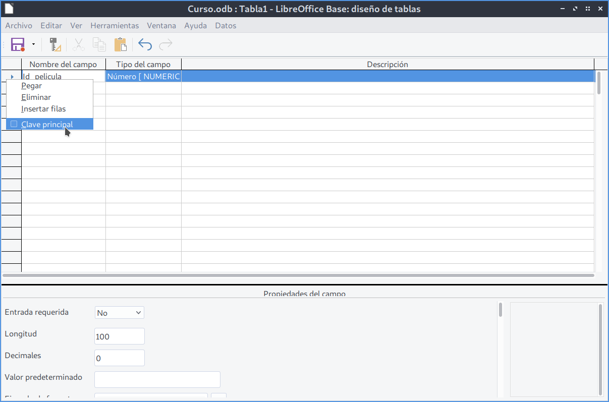
Definimos el resto de campos de nuestra tabla y la guardamos con el nombre Peliculas.
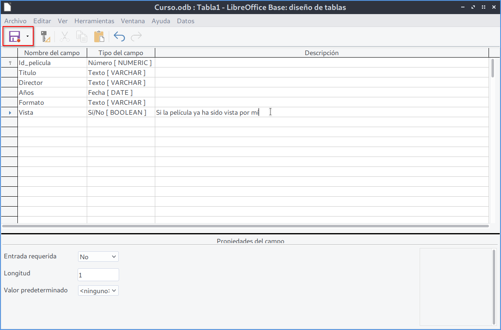
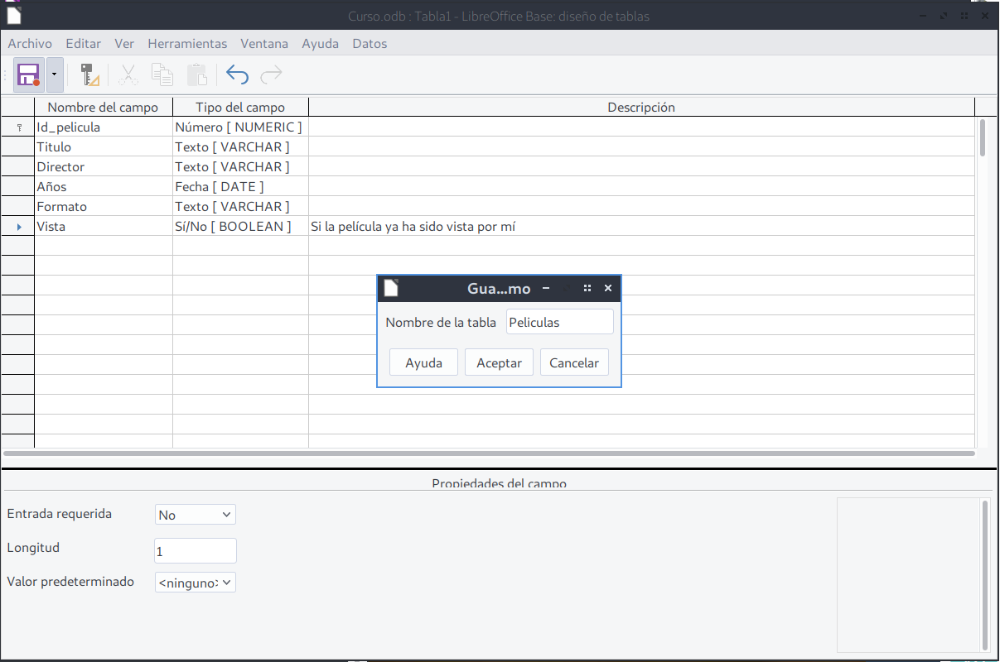
Si hemos seguido todos los pasos correctamente, nuestra tabla Peliculas debe aparecer dentro del apartado Tablas en la parte inferior de la ventana principal de LibreOffice Base.

Acentos
Algo que nos puede resultar raro de los nombres de los campos y del nombre de la tabla es que en ningún momento estamos utilizando tildes al escribirlo. Esto es debido a que las tildes pueden producir problemas en LibO Base tanto en el nombre de los campos como de las tablas por lo que es mejor evitar su uso en los nombres de LibO Base.
Modificar de columnas existentes¶
Las modificaciones que se pueden realizar sobre las columnas existentes pueden ser de cuatro tipos:
- Cambios en el nombre.
- Cambio de tipo de datos.
- Cambio de la descripción.
- Cambio en las restricciones: ser o no clave principal.
En el caso del cambio de nombre o descripción, basta con situarse en el valor que queramos modificar y cambiar el contenido del texto. Por ejemplo, podemos cambiar el nombre de la columna Vista por el de Visionada.
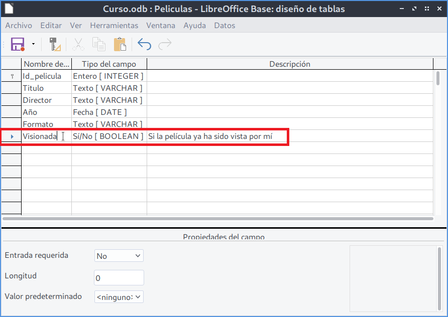
En el caso de cambio de tipo de datos, basta con seleccionar un nuevo tipo de dato del desplegable. Por ejemplo, si cambiamos es el tipo de dato de Id_pelicula de Número a Integer y fijamos esta columna con la propiedad Valor Automático a Sí , conseguiremos que nuestra clave principal tome valores automáticamente.
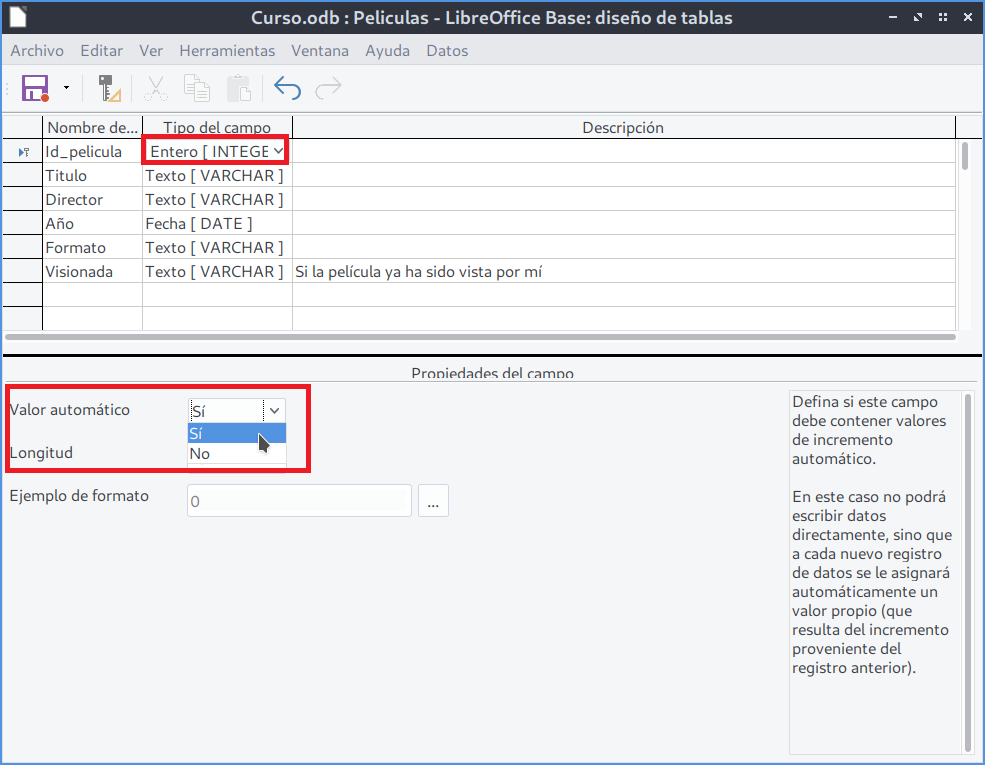
Eliminar columnas existentes¶
Para eliminar columnas de nuestra tabla nos situamos al inicio del campo y seleccionamos la opción Eliminar. Antes de eliminar una columna de nuestra tabla debemos saber que al hacerlo se borrarán todos los valores que tuviéramos dados a esta columna en nuestra filas por lo que, sobre todo en el caso de la columna que sea clave principal, hay que pensar muy bien si de verdad es conveniente eliminar esa columna.
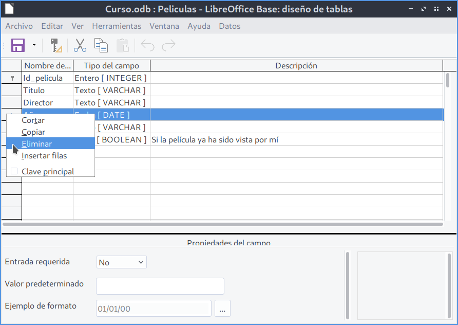
Actividad
📝 AA5.1 Nuestra primera base de datos¶
(C.ESP1 / CE1.1, CE1.2 / IC1-3p)
- Abre LibreOffice - Base y crea la base de datos
BBDD_Peliculas - Crea la tabla Peliculas siguiendo los pasos descritos en la unidad.
- Guarda la base de datos.
-
A continuación, crea la tabla llamada Interpretes con los siguientes campos:
- Id_interprete, de tipo entero. Llave Primaria.
- Apellidos, de tipo texto.
- Nombre, de tipo texto.
- Nacionalidad, de tipo texto.
-
Añade una columna llamada
Mi_columnade tipo numerico a la tabla Peliculas. - Elimina la columna llamada
Mi_columnade de la tabla Peliculas . - Modificar el nombre del campo Vista de la tabla Peliculas por el nombre Visionada.
- Modificar la tabla Peliculas para que al campo
Id_peliculase le den valores automáticamente con cada nueva fila. - Entrega en un Writer con todas las capturas de pantalla que demuestren los pasos para la ejecucación de cada punto del ejercicio.
Actividad Refuerzo
🔨 AAR5.2 Base de datos Hospital¶
(C.ESP1 / CE1.1, CE1.2 / IC1-3p)
- Abre LibreOffice - Base y crea la base de datos
BBDD_Hospital -
Crea las tablas: Pacientes, Médicos y Visitas, con los campos, determinandos.
- Paciente : CodPaciente, Nombre, Apellidos, Sexo,FechaNacimiento, DNI, Dirección, Población, Provincia, Telf.
- Médico : CodMédico, Nombre, Apellidos, Dept, Direccion, Telf, FechaNacimiento, DNI, Salario.
- Visitas : NumVisitas,FechaVisita, CodPaciente, CodMedico, MotivoVisita, Exploracion, PruebasRealizadas,Diagnostico.
-
Crear las claves primarias:
- Pacientes: CodPaciente.
- Médicos: CodMedico.
- Visitas: NumVisitas.